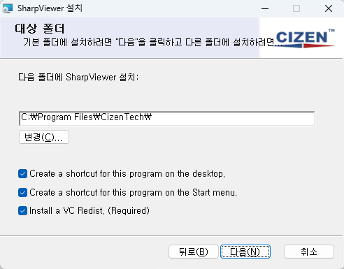
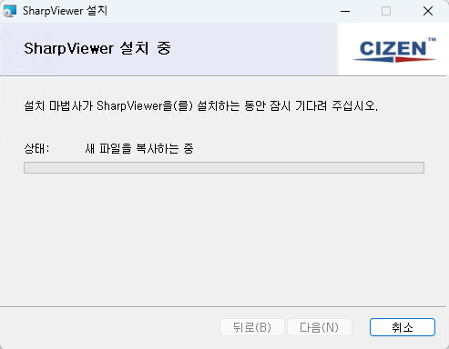

Install
DPS Board 제어 프로그램의 설치 절차입니다. 아래 단계를 따라 프로그램을 올바르게 설치하세요.
1. 설치 프로그램 다운로드

제공된 설치 파일을 로컬 컴퓨터에 다운로드합니다.
2. 설치 프로그램 실행
다운로드한 파일을 실행하여 설치 과정을 시작합니다.
3. 사용자 사용권 계약

사용자 사용권 계약서에 동의함을 확인하는 절차입니다.
동의하지 않을 경우 설치가 진행되지 않습니다.
4. 폴더 설치 경로 설정

기본 설치 경로를 선택하거나 사용자가 원하는 커스텀 경로를 지정할 수 있습니다.
VC Redis가 이미 설치되어 있는 경우, 해당 옵션을 해제하여 중복 설치를 방지합니다.
5. 설치 준비 완료

설치 준비가 완료되면, 설치 버튼을 클릭하여 실제 설치를 시작합니다.
6. 설치 중

설치 과정이 진행됩니다. 설치가 완료될 때까지 기다려 주세요.
7. VC_redist_x64 설치

VC_redist_x64는 해당 프로그램 실행에 필요한 필수 패키지입니다. 반드시 설치해야 정상적인 동작이 보장됩니다.
8. 설치 완료

설치가 완료되었습니다.
Launch 체크박스를 선택하고 마침 버튼을 클릭하여 프로그램을 바로 실행할 수 있습니다.
9. 프로그램 실행 확인

프로그램이 정상적으로 실행되었음을 확인할 수 있습니다. 이제 DPS 보드를 제어할 준비가 완료되었습니다.